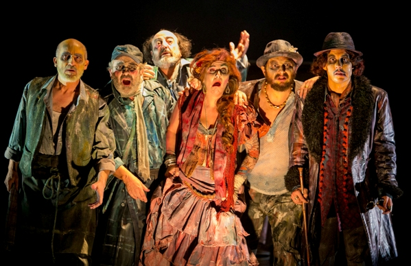

LUCES DE BOHEMIA
TEATRO MARIA GUERRERO
La obra narra las últimas horas de la vida de Max Estrella, un «hiperbólico andaluz, poeta de odas y madrigales» ya anciano, miserable y
ciego que gozó en algún momento de cierto reconocimiento. En su peregrinaje por un Madrid oscuro, turbio, marginal y sórdido, le acompaña
don Latino de Hispalis y le dan la réplica algunos otros personajes de la bohemia madrileña de la época. En sus diálogos se vierten de
forma magistral críticas a la cultura oficialista y a la situación social y política de una España condenada a no reconocer a sus próceres.
Tras múltiples vicisitudes, la obra acaba con la muerte de Max Estrella y se prolonga con su velatorio. El drama se cierra con un borracho
que grita: "¡Cráneo previlegiado!", expresión que se repite a lo largo de la historia y que resume el enfoque esperpéntico de la misma.
Sessões:

Lugares reservados com sucesso!
Okay
Tem a certeza que deseja efetuar a reserva?
Sim
Não